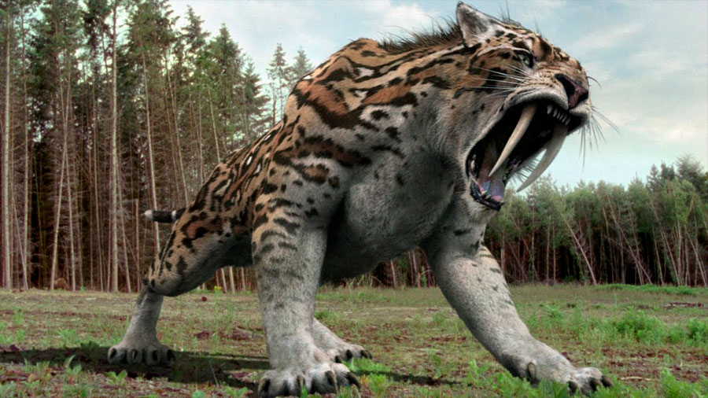

DIENTES DE SABLE

¿Qué es el "Diente de Sable"?
Fue un pariente lejano de los felinos que a principios del siglo XXI sabemos viven en el planeta tierra, al parecer, el gato doméstico es un primo más cercano al tigre, que éste último al Dientes de Sable.
Se trata de uno de los últimos felinos cuya estirpe (los Machairodontinae) se extinguió al final de la pasada Edad de Hielo hace unos 10 milenios.
Caracteristicas del Dientes de Sable
Pesaba entre 55 y 100 kg con un peso intermedio aunque antes se pensaba que tenía mayor masa, se ha estimado entre 160 y 280 kg.
Los más grandes eran los machos, con pesos de 220 a 360 kg, aunque incluso podría haber llegado a los 400 kg.Su rasgo más distintivo eran los dientes caninos bastante largos egaron a medir alrededor de unos 18 a 28 cm.
Se considera que el pelaje era liso y podía haber tenido patrones manchados como algunos felinos actuales, un rasgo común en ciertas especies que habitan en zonas con vegetación cerrada.